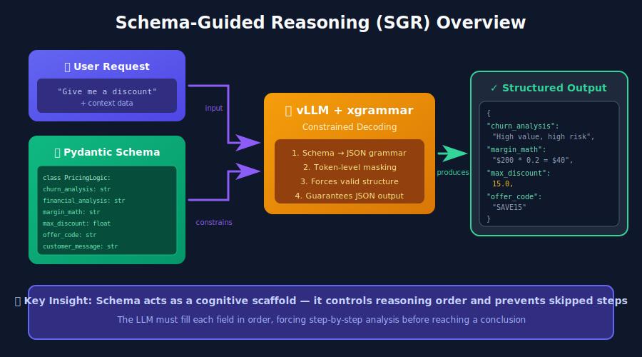
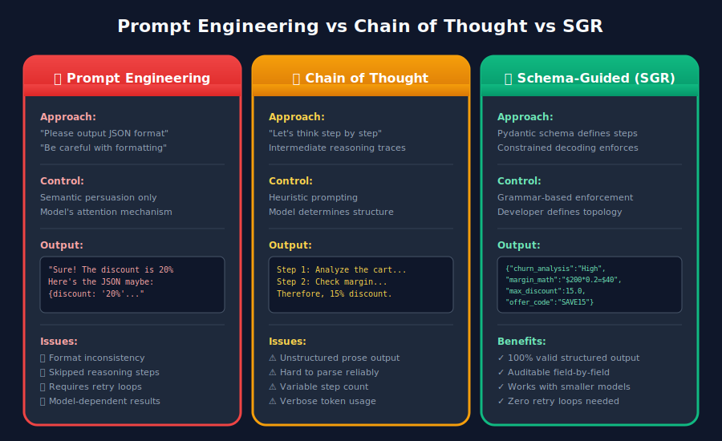
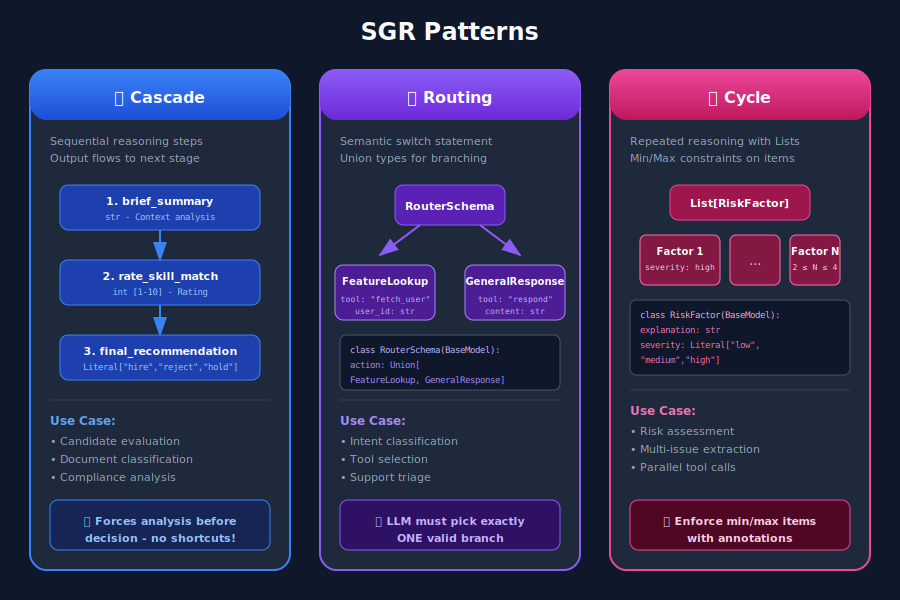
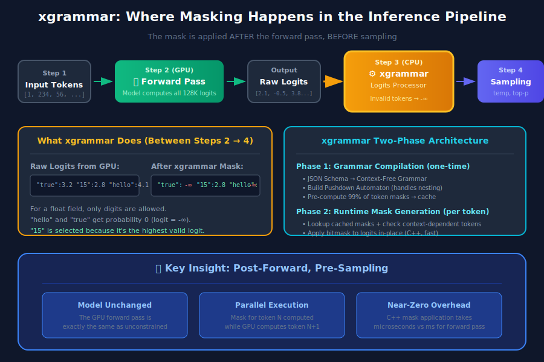
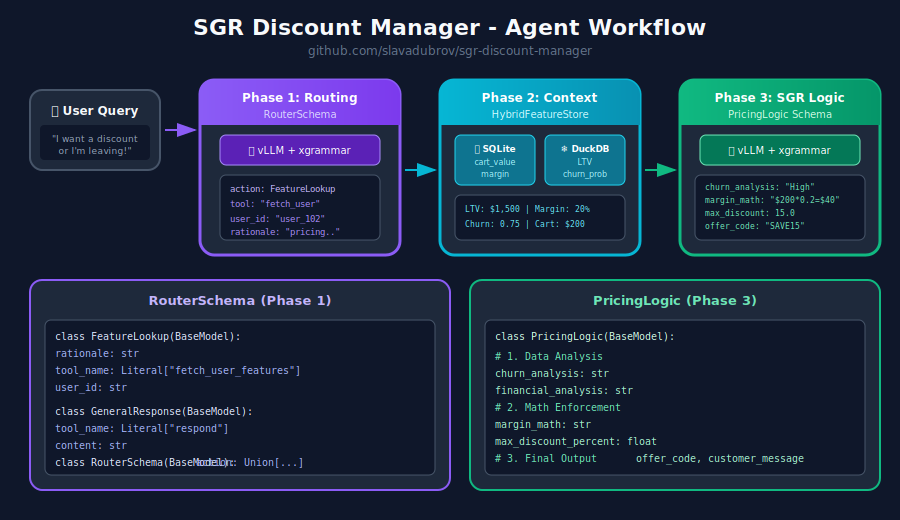

Schema-Guided Reasoning on vLLM — Turning LLMs into Reliable Business Logic Engines
TL;DR
Schema-Guided Reasoning (SGR) is a technique that forces LLMs to reason through predefined steps by enforcing structured output schemas. Instead of hoping the model follows your formatting instructions, you guarantee it with constrained decoding. Combined with vLLM's xgrammar backend, you get 100% valid JSON output with near-zero latency overhead.
The problem: You build an LLM-powered agent. It works in demos. In production, it outputs malformed JSON, skips reasoning steps, and gives inconsistent responses. You add retry loops, validation layers, larger models. Costs explode.
The fix: Define your reasoning topology as a Pydantic schema. Let xgrammar enforce it at the token generation level. The LLM physically cannot produce invalid output.
What is Schema-Guided Reasoning?
Schema-Guided Reasoning (SGR) is a technique pioneered by Rinat Abdullin that guides LLMs to produce structured, clear, and predictable outputs by enforcing reasoning through predefined steps.
Instead of allowing free-form text completion (which can be inconsistent or ambiguous), the schema acts as a strict guideline. By creating a specific schema (or structured template), you explicitly define:
- What steps the model must go through (preventing skipped reasoning)
- In which order it must reason (ensuring logical flow)
- Where it should focus attention (improving depth and accuracy)
Think of it as giving the model a "cognitive checklist" that it must follow.

Why SGR Matters
The core insight is simple but powerful:
Schema = Cognitive Scaffold
When you define a schema with fields like churn_analysis, margin_math, and then max_discount_percent, the model is forced to populate these fields in order. It cannot jump to the discount decision without first analyzing the data.
This translates to:
- Reproducible reasoning — consistent inference across repeated runs
- Auditable outputs — every reasoning step is explicit and inspectable
- Debuggable & testable — intermediate outputs can be evaluated against test datasets
- Works with smaller models — the schema "holds the hand" of weaker models
- 5-10% accuracy boost — commonly observed in production deployments
SGR vs Chain of Thought vs Prompt Engineering
Let's be precise about what makes SGR different from the approaches you're probably already using.

The Comparison
| Feature | Prompt Engineering | Chain of Thought | Schema-Guided Reasoning |
|---|---|---|---|
| Output Structure | Variable text | Free-form prose | Rigid JSON/Pydantic |
| Control Mechanism | Semantic persuasion ("Please output JSON") | Heuristic prompting ("Let's think step by step") | Constrained decoding (grammar-based) |
| Reasoning Flow | Model determines | Model determines | Developer determines (schema topology) |
| Auditability | Low (requires parsing) | Low (requires reading prose) | High (field-level inspection) |
| Integration | Difficult (regex parsing) | Difficult (variable format) | Trivial (native object deserialization) |
| Error Rate | High (format variability) | Moderate (hallucination of format) | Near-zero (syntax enforced by engine) |
| Model Requirement | Strong instruction following | Strong reasoning capability | Works with smaller models too |
Prompt Engineering: Semantic Persuasion
Please analyze the customer data and output your response as valid JSON
with the following structure: {"discount": <number>, "reason": <string>}
Be careful with the formatting!
The problem: You're hoping the model's semantic understanding of "output JSON" outweighs its tendency to be conversational. A model update, temperature change, or different few-shot examples can break your parser.
Chain of Thought: Better Reasoning, Same Structure Problems
Let's think step by step:
1. First, I'll analyze the customer's churn risk...
2. Then I'll calculate the margin...
3. Therefore, I recommend a 15% discount.
CoT improves reasoning accuracy but makes structure worse. The output is unpredictable prose that's nearly impossible to parse reliably. You end up needing a second LLM call to extract structured data from the reasoning.
SGR: Structured Chain of Thought
SGR doesn't abandon CoT's insight that intermediate reasoning improves accuracy. It formalizes it:
class PricingLogic(BaseModel):
# 1. Data Analysis (must complete before decision)
churn_analysis: str = Field(..., description="Analyze churn_probability")
financial_analysis: str = Field(..., description="Analyze cart_value and margin")
# 2. Math Enforcement (explicit calculation)
margin_math: str = Field(..., description="Calculate: 'Cart $X * Y% = $Z'")
# 3. Decision Constraint (bounded by prior analysis)
max_discount_percent: float = Field(..., description="Max allowed discount")
# 4. Final Output
offer_code: str
customer_message: str
The model cannot output max_discount_percent without first populating churn_analysis, financial_analysis, and margin_math. The schema enforces the reasoning order.
SGR Patterns
SGR enables three foundational patterns for controlling LLM reasoning. These can be combined for complex workflows.

1. Cascade: Sequential Reasoning Steps
Cascade ensures the model follows predefined reasoning steps in order. Each field must be completed before the next.
from pydantic import BaseModel
from typing import Literal, Annotated
from annotated_types import Ge, Le
class CandidateEvaluation(BaseModel):
"""Evaluate a job candidate with enforced reasoning order."""
# Step 1: Summarize (forces context awareness)
brief_candidate_summary: str
# Step 2: Rate (bounded integer)
rate_skill_match: Annotated[int, Ge(1), Le(10)]
# Step 3: Decide (constrained choices)
final_recommendation: Literal["hire", "reject", "hold"]
Use cases: Candidate evaluation, document classification, compliance analysis, medical diagnosis
Key insight: The model must complete brief_candidate_summary before it can rate, and must rate before it can recommend. No shortcuts allowed.
2. Routing: Semantic Switch Statement
Routing forces the model to explicitly choose one path from multiple options. This is implemented using Union types.
from pydantic import BaseModel
from typing import Literal, Union
class FeatureLookup(BaseModel):
"""Route to database lookup."""
rationale: str
tool_name: Literal["fetch_user_features"] = "fetch_user_features"
user_id: str
class GeneralResponse(BaseModel):
"""Standard response for non-pricing queries."""
tool_name: Literal["respond"] = "respond"
content: str
class RouterSchema(BaseModel):
"""The model must pick exactly ONE branch."""
action: Union[FeatureLookup, GeneralResponse]
Use cases: Intent classification, tool selection, support triage, multi-agent dispatch
Key insight: The Literal type with a discriminator field (like tool_name) ensures the model commits to one branch and fills in the required fields for that specific path.
3. Cycle: Repeated Reasoning with Lists
Cycle forces the model to produce multiple items, with constraints on minimum and maximum count.
from pydantic import BaseModel
from typing import List, Literal, Annotated
from annotated_types import MinLen, MaxLen
class RiskFactor(BaseModel):
explanation: str
severity: Literal["low", "medium", "high"]
class RiskAssessment(BaseModel):
"""Generate 2-4 risk factors."""
factors: Annotated[List[RiskFactor], MinLen(2), MaxLen(4)]
Use cases: Risk assessment, issue extraction, parallel tool calls, multi-step planning
Key insight: The MinLen and MaxLen annotations force the model to generate at least 2 but no more than 4 items. Combined with Routing, this enables parallel tool dispatch.
Making SGR Work: Constrained Decoding
The patterns above are powerful, but they're just Pydantic schemas — how do we actually enforce them? The answer is Constrained Decoding (also called Structured Output).
Constrained Decoding works by modifying the token generation process. Instead of allowing the model to freely sample from its vocabulary, the decoding engine applies a grammar mask that blocks tokens that would violate the schema. This happens at the inference engine level, not in your application code.
[!TIP] SGR doesn't require "reasoning models" (like o1 or DeepSeek-R1). It works well with instruction-tuned models, and especially well with models distilled from reasoning models.
Supported Cloud Providers
Most modern LLM providers now support Structured Outputs via constrained decoding:
| Provider | Support |
|---|---|
| OpenAI | Structured Outputs (including Azure). GPT-5 uses JSON Schema via llguidance |
| Google/Gemini | JSON Schema support since Nov 2025 (Pydantic and Zod) |
| Mistral | Custom Structured Output |
| Grok | Structured Outputs for multiple models |
| Fireworks AI | JSON Schema |
| Cerebras | Structured Outputs |
| OpenRouter | Depends on downstream provider, maps to JSON Schema |
Supported Inference Engines
For self-hosted models, most modern inference engines support constrained decoding:
| Engine | Backend |
|---|---|
| vLLM | xgrammar or guidance |
| SGLang | Outlines, XGrammar, or llguidance |
| TensorRT-LLM | GuidedDecoding |
| Ollama | Structured Outputs |
Why This Article Focuses on vLLM + xgrammar
For this article, we'll dive deep into vLLM with the xgrammar backend because:
- Production-grade: vLLM is the most widely deployed open-source LLM inference engine
- Zero-overhead: xgrammar is implemented in C++ with near-zero latency impact
- OpenAI-compatible API: Easy migration from cloud to self-hosted
- Full schema support: Handles complex nested schemas, unions, and recursive structures
Let's look at how xgrammar actually enforces these schemas at the token level.
How xgrammar Enforces Schemas
Now let's get precise about when and how xgrammar enforces your schema. Understanding this helps you debug and tune your SGR workflows.

Where Does Masking Happen?
Here's the key insight: xgrammar modifies the output logits AFTER the model's forward pass, BEFORE sampling. It does not change the model itself — it filters what tokens can be selected.
The standard LLM inference loop looks like this:
1. Input tokens → GPU Forward Pass → Logits (probability scores for all ~128K tokens)
2. Logits → Sampling (temperature, top-p, etc.) → Next Token
3. Repeat until done
xgrammar inserts itself between steps 1 and 2:
1. Input tokens → GPU Forward Pass → Raw Logits
2. Raw Logits → xgrammar Logits Processor → Masked Logits
3. Masked Logits → Sampling → Next Token (guaranteed valid)
4. Repeat until done
The critical point: the model computes its full probability distribution on the GPU first. Then xgrammar, running on CPU, applies a bitmask to the logits before sampling. Invalid tokens get their logits set to -∞, which makes their probability exactly 0 after softmax.
The Two-Phase Process
xgrammar's efficiency comes from splitting the work into two phases:
Phase 1: Grammar Compilation (one-time, before inference)
# This happens once per schema
tokenizer_info = xgr.TokenizerInfo.from_huggingface(tokenizer)
grammar_compiler = xgr.GrammarCompiler(tokenizer_info)
compiled_grammar = grammar_compiler.compile_json_schema(schema_json)
During compilation, xgrammar:
- Converts your JSON Schema to a Context-Free Grammar (CFG)
- Builds a Pushdown Automaton (PDA) — like a state machine with a stack for handling nested structures like
{"a": {"b": {"c": ...}}} - Pre-computes which tokens are valid at each grammar position (the "adaptive token mask cache")
- Categorizes tokens as "context-independent" (can be pre-checked) or "context-dependent" (must be checked at runtime based on stack state)
[!NOTE] About 99% of tokens are context-independent and can be cached (XGrammar paper). This is why xgrammar is so fast — most validity checks are just cache lookups.
Phase 2: Runtime Mask Generation (every token)
At each generation step:
- The
GrammarMatchertracks the current position in the grammar - It retrieves the pre-computed mask for context-independent tokens (cache lookup)
- It runs the PDA to check the remaining context-dependent tokens
- It combines these into a final bitmask and applies it to the logits
Why Pushdown Automata Matter
You might wonder: why not just use regex? The answer is nesting.
A regular expression (which is a Finite State Machine) cannot reliably match structures like:
{ "user": { "profile": { "settings": { "theme": "dark" } } } }
The problem is matching the closing braces }}} — you need to "remember" how many you opened. A Pushdown Automaton has a stack that tracks this context, enabling it to handle arbitrary nesting depth.
This is why xgrammar can enforce complex schemas with Union types, nested objects, and recursive structures — capabilities that simpler regex-based approaches cannot match.
Concrete Example: Generating a Float Field
When the model is generating "max_discount_percent":, xgrammar knows from the schema that a float comes next. The mask:
- Allows (probability unchanged):
0,1,2, ...,9,.,- - Blocks (probability → 0):
",{,[,true,false,null, and all 128K+ other tokens
The model's forward pass might have assigned high probability to the word "fifteen". But after xgrammar's mask, that token has probability 0. The model must output digits.
Performance: Why "Near-Zero Overhead"?
Three factors make xgrammar fast:
-
Parallel execution: Mask computation (CPU) overlaps with the next forward pass (GPU). While the GPU computes logits for token N+1, the CPU computes the mask for token N.
-
Caching: 99%+ of token validity is pre-computed during grammar compilation. Runtime checks are mostly cache lookups.
-
C++ implementation: The hot path is optimized C++, not Python. The mask is applied directly to logits in-place.
In benchmarks, xgrammar often shows negligible overhead — and sometimes structured generation is faster than unconstrained generation because the constrained vocabulary reduces sampling complexity.
Practical Implementation with vLLM
Let's look at a complete implementation using the sgr-discount-manager project — a demo that shows SGR patterns for dynamic pricing.

Project Structure
sgr/
├── agent.py # Main orchestration
├── models/
│ └── schemas.py # Pydantic SGR schemas
├── prompts/
│ ├── routing.py # Phase 1 prompts
│ └── pricing.py # Phase 3 prompts
├── store/
│ └── hybrid_store.py # Hot/Cold data retrieval
└── utils/
└── llm_client.py # LLM client wrapper with xgrammar
Step 1: Define Your Schemas
# sgr/models/schemas.py
from pydantic import BaseModel, Field
from typing import Literal, Union
# --- Phase 1: Routing (Union for branching) ---
class FeatureLookup(BaseModel):
"""Route to DB lookup if pricing context is needed."""
rationale: str
tool_name: Literal["fetch_user_features"] = "fetch_user_features"
user_id: str
class GeneralResponse(BaseModel):
"""Standard response for non-pricing queries."""
tool_name: Literal["respond"] = "respond"
content: str
class RouterSchema(BaseModel):
action: Union[FeatureLookup, GeneralResponse]
# --- Phase 2: Pricing Logic (Cascade for sequential reasoning) ---
class PricingLogic(BaseModel):
"""
Strict reasoning topology for dynamic pricing.
Fields are ordered to enforce the analysis→decision flow.
"""
# 1. Data Analysis (Reflection)
churn_analysis: str = Field(...,
description="Analyze churn_probability (High > 0.7).")
financial_analysis: str = Field(...,
description="Analyze cart_value and profit_margin.")
# 2. Hard Math Enforcement
margin_math: str = Field(...,
description="Calculate absolute profit: 'Cart $200 * 0.20 Margin = $40'.")
# 3. The Decision Constraint
max_discount_percent: float = Field(...,
description="Max allowed discount %. NEVER exceed margin.")
# 4. Final Output
offer_code: str = Field(..., description="Generated code (e.g. SAVE20).")
customer_message: str = Field(..., description="The final polite offer text.")
Step 2: Create the LLM Client with xgrammar
# sgr/utils/llm_client.py
from openai import OpenAI
from pydantic import BaseModel
from typing import TypeVar
import json
T = TypeVar("T", bound=BaseModel)
class LLMClient:
"""Wrapper for vLLM with xgrammar-enforced structured generation."""
def __init__(self, base_url: str = "http://localhost:8000/v1"):
self.client = OpenAI(base_url=base_url, api_key="EMPTY")
self.model = self._get_available_model()
def _get_available_model(self) -> str:
"""Auto-detect the model running on vLLM server."""
try:
models = self.client.models.list()
if models.data:
return models.data[0].id
except Exception:
pass
return "Qwen/Qwen2.5-7B-Instruct"
def run_sgr(self, messages: list[dict], schema_class: type[T]) -> T:
"""Run inference with Schema-Guided Response constraints.
Uses vLLM's guided_json with xgrammar backend to enforce
strict schema constraints at the token generation level.
"""
schema_dict = schema_class.model_json_schema()
# Enhance system message with schema for model guidance
enhanced_messages = messages.copy()
if enhanced_messages and enhanced_messages[0]["role"] == "system":
schema_json = json.dumps(schema_dict, indent=2)
enhanced_messages[0] = {
"role": "system",
"content": (
enhanced_messages[0]["content"]
+ f"\n\nRespond with JSON matching this schema:\n{schema_json}"
),
}
# The magic: vLLM's guided_json with xgrammar backend
completion = self.client.chat.completions.create(
model=self.model,
messages=enhanced_messages,
temperature=0.1, # Low temp for deterministic reasoning
extra_body={
"guided_json": schema_dict, # Pydantic schema as dict
"guided_decoding_backend": "xgrammar", # Hardware-enforced
},
)
raw_response = completion.choices[0].message.content
return schema_class.model_validate_json(raw_response)
[!NOTE] The
guided_jsonparameter accepts a JSON Schema dict. Combined withguided_decoding_backend: "xgrammar", this ensures the LLM can only generate tokens that form valid JSON matching your schema.
Step 3: Orchestrate the Agent
# sgr/agent.py
from .models.schemas import PricingLogic, RouterSchema
from .prompts.routing import build_routing_prompt
from .prompts.pricing import build_pricing_context_prompt, ASSISTANT_FETCH_MESSAGE
from .store.hybrid_store import HybridFeatureStore
from .utils.llm_client import LLMClient
def pricing_agent(user_query: str, user_id: str) -> str:
"""Process a pricing query with three-phase SGR workflow."""
llm = LLMClient()
feature_store = HybridFeatureStore()
# Build conversation history
history = [
{"role": "system", "content": build_routing_prompt(user_id)},
{"role": "user", "content": user_query},
]
# --- Phase 1: Routing (Uses RouterSchema) ---
print(f"🤖 Processing: '{user_query}' for {user_id}")
decision = llm.run_sgr(history, RouterSchema)
print(f"📍 Routing decision: {decision.action.tool_name}")
if decision.action.tool_name == "respond":
return decision.action.content
# --- Phase 2: Context Retrieval ---
if decision.action.tool_name == "fetch_user_features":
print(f"🔍 Fetching features for {user_id}...")
context = feature_store.get_user_context(user_id)
if not context:
return "Error: User profile not found."
print(f" [Data] LTV: ${context.get('user_ltv')} | "
f"Margin: {context.get('cart_profit_margin', 0) * 100}%")
# Inject context into conversation
history.append({"role": "assistant", "content": ASSISTANT_FETCH_MESSAGE})
history.append({
"role": "user",
"content": build_pricing_context_prompt(
churn_prob=context.get("churn_probability", 0.5),
cart_val=context.get("current_cart_value", 100),
margin=context.get("cart_profit_margin", 0.2),
user_ltv=context.get("user_ltv", 0),
),
})
# --- Phase 3: SGR Logic Execution (Uses PricingLogic) ---
print("🧠 Calculating Offer (Schema Enforced)...")
offer = llm.run_sgr(history, PricingLogic)
# Audit log — the SGR benefit: explicit reasoning traces
print(f" [Audit] Math: {offer.margin_math}")
print(f" [Audit] Max Allowed: {offer.max_discount_percent}%")
return offer.customer_message
return "I'm sorry, I couldn't process your request."
if __name__ == "__main__":
response = pricing_agent("I want a discount or I'm leaving!", "user_102")
print(f"\n💬 Final Reply: {response}")
Step 4: Run vLLM with xgrammar
# Start vLLM server with xgrammar backend (default in recent versions)
python -m vllm.entrypoints.openai.api_server \
--model Qwen/Qwen2.5-7B-Instruct \
--port 8000
# Run the agent
uv run python -m sgr.agent
Example Output
🤖 Processing: 'I want a discount or I'm leaving!' for user_102
📍 Routing decision: fetch_user_features
🔍 Fetching features for user_102...
[Data] LTV: $1,500 | Margin: 20%
🧠 Calculating Offer (Schema Enforced)...
[Audit] Math: Cart $200 * 0.20 Margin = $40
[Audit] Max Allowed: 15.0%
💬 Final Reply: We value your loyalty! Here's a special 15% discount
with code SAVE15. This reflects our appreciation for your continued
business with us.
The audit log shows exactly how the model reasoned: it calculated the margin ($40 on a $200 cart at 20% margin), and correctly bounded the discount to stay within the profit constraint.
Best Practices
Schema Design
- Order fields by reasoning flow: Put analysis fields before decision fields
- Use descriptive Field descriptions: They guide the model's attention
- Constrain with Literal and Annotated: Use
Literal["a", "b"]for enums,Annotated[int, Ge(1), Le(10)]for bounds - Keep schemas focused: One schema per reasoning phase, compose with multiple calls
vLLM Configuration
- Use low temperature (0.1-0.3) for deterministic reasoning
- Let xgrammar handle structure: Don't over-engineer prompts for formatting
- Monitor token usage: SGR typically uses fewer tokens than CoT (no verbose prose)
Production Considerations
- Schema versioning: Track schema changes like API versions
- Fallback handling: Even with SGR, network/server errors need graceful handling
- Audit logging: Log raw SGR outputs for compliance and debugging
- Test with edge cases: Ensure schemas handle boundary conditions
Conclusion
Schema-Guided Reasoning bridges the gap between the flexibility of LLMs and the reliability requirements of production systems. By defining your reasoning topology as a Pydantic schema and letting xgrammar enforce it, you get:
- Guaranteed valid output — no retry loops, no parsing failures
- Explicit reasoning traces — every step is auditable
- Smaller model viability — the schema compensates for weaker instruction-following
- Lower costs — fewer tokens, no retries, smaller models work
The sgr-discount-manager demo shows how these patterns work in practice. Clone it, run it, and adapt the schemas for your use case.
References
SGR Framework
- Schema-Guided Reasoning (SGR) — Rinat Abdullin's original framework
- SGR Patterns — Cascade, Routing, Cycle patterns
xgrammar
- XGrammar: Flexible and Efficient Structured Generation Engine for Large Language Models — Yixin Dong et al., arXiv:2411.15100 (technical paper with benchmarks)
- xgrammar GitHub — Fast, flexible structured generation library
- xgrammar Documentation — Official docs with quick start guide
- xgrammar Quick Start — Getting started with xgrammar
- Achieving Efficient Structured Generation with XGrammar — MLC blog post on xgrammar internals
vLLM
- vLLM Structured Outputs — Official documentation
Demo Project
- sgr-discount-manager — Working demo with all code examples from this post